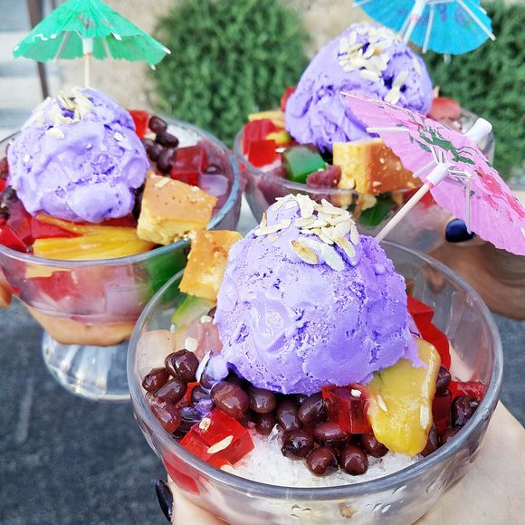

Cheflib - Filipino Famous Desserts
Halo-Halo

Ingredients:
- Shaved ice
- Evaporated milk
- Sweetened beans
- Jellies (nata de coco, kaong, gulaman)
- Fruits (banana, jackfruit, sweet potato)
- Leche flan
- Ube halaya (purple yam)
- Cornflakes or rice crispies
- Caramel sauce
- Ice cream (optional)
Instructions:
- Layer shaved ice, sweetened beans, jellies, fruits, leche flan, and ube halaya in a glass or bowl.
- Drizzle with evaporated milk and caramel sauce.
- Top with cornflakes or rice crispies.
- Add a scoop of ice cream if desired.
- Mix well before eating.
Leche Flan

Ingredients:
- Egg yolks
- Condensed milk
- Evaporated milk
- Sugar
- Vanilla extract (optional)
Instructions:
- In a bowl, combine egg yolks, condensed milk, evaporated milk, and sugar. Add vanilla extract if desired.
- Strain the mixture to remove any lumps.
- Pour the mixture into llaneras (caramelized molds).
- Steam for about 30-40 minutes or until set.
- Let it cool, then refrigerate before serving.
- To serve, invert onto a plate so the caramel sauce is on top.
Saging con yelo

Ingredients:
- Ripe saba banana(peeled)
- Brown sugar
- Evaporated milk
- Shaved Ice
- Vanilla extract (optional)
Instructions:
- In a pan, boil the saba combine with brown sugar. Cook until banana is slightly soft.
- Rest it cool, Prepare your cup. put your cooked saba.
- Put the shave ice on top.
- Pour evaporated milk on the top.
Buko Pandan
Ingredients:
- Buko Strips
- Condensed milk
- Evaporated milk
- Sago or tapioca Pearl
- Gelatin(Pandan Flavor)
Instructions:
- In a bowl, combine Buko strips, condensed milk, evaporated milk, and Gelatin.
- Pour the mixture into mold
- refrigerate for about 30-40 minutes.
- Add your tapioca pearl on top and pour milk(optional)
- Serve it cool.
Turon

Ingredients:
- Banana Saba(peeled)
- Brown Sugar
- Lumpia Wrapper
- Banana Leaves
- oil
Instructions:
- Cut your banana into half.
- In you lumpia wrapper arrange your banana and put sugar, and wrap it.
- In a pan preheat it and put oil. Put you wrapped banana in the pan and fry.
- Add in the outer part sugar to caramelized.
- Let it cool, then serve it a plate.